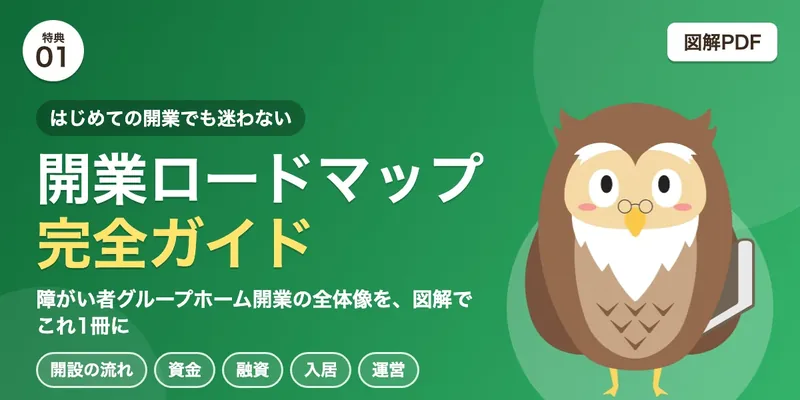
開業ロードマップ 完全ガイド（図解PDF）グループホームとは何かから、開設の流れ、資金、融資、入居、運営まで。開業の全体像を図解で1冊にまとめます。
開業準備 達成度診断経験・自己資金・物件・人員・ご家族の理解・時間の6つの質問に答えると、準備の現在地（A〜C）と次の一手がわかります。
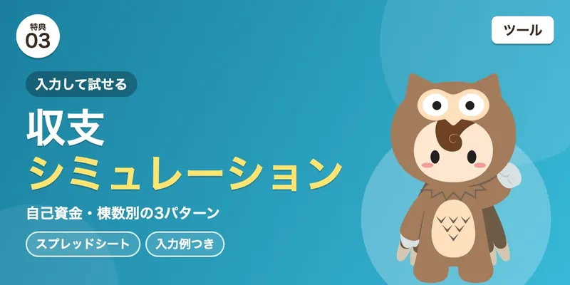
収支シミュレーション 3パターン自己資金・棟数別に入力して、収支の組み上がり方を試せるスプレッドシートです（数字は入力例）。
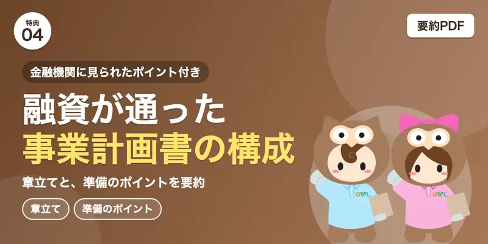
融資が通った事業計画書の構成実際に融資につながった計画書の章立てと、金融機関に見られたポイントを要約します（実物は出しません）。
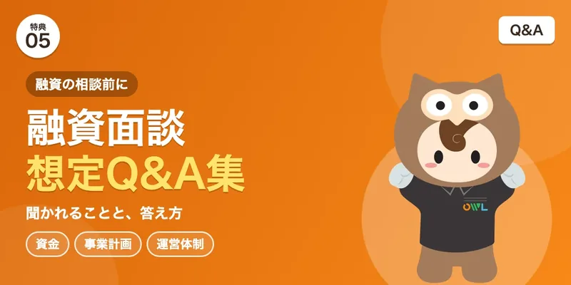
融資面談 想定Q&A集金融機関に聞かれることと、答え方のまとめです。
銀行融資用 ヒアリングシート融資の相談前に埋めておく全項目の記入式シートです。
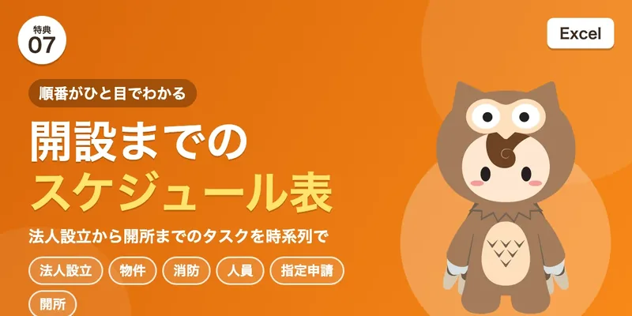
開設までのスケジュール表（Excel）法人設立、物件、消防、人員、指定申請、開所までのタスクを時系列に並べます。
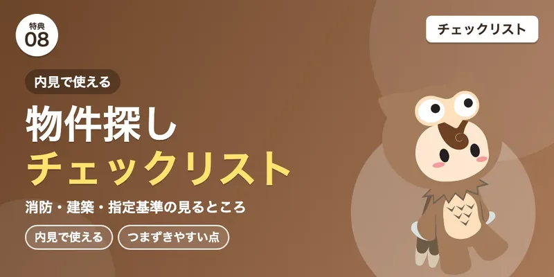
物件探し チェックリスト内見で見る項目（消防・建築・指定基準）と、つまずきやすい点をまとめます。
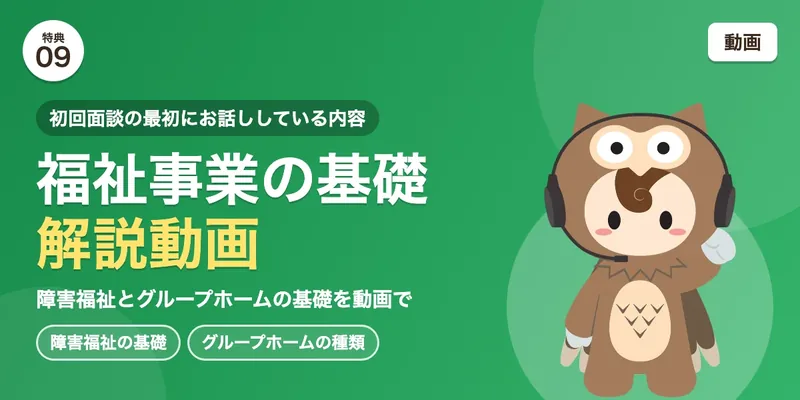
福祉事業の基礎 解説動画障害福祉の基礎とグループホームの種類を、初回面談の第1・2章から動画で。
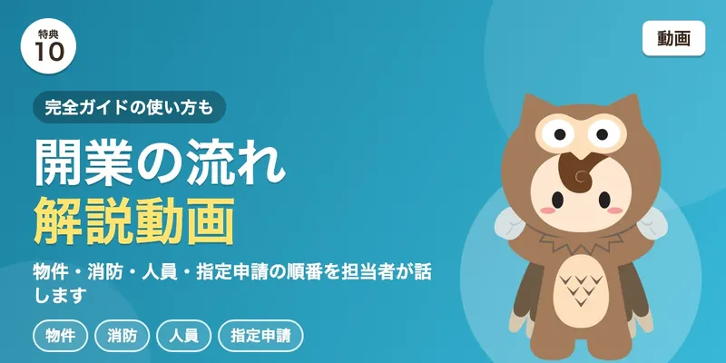
開業の流れ 解説動画完全ガイドの使い方と、物件・消防・人員・指定申請の順番を、担当者が話す動画です（要撮影）。
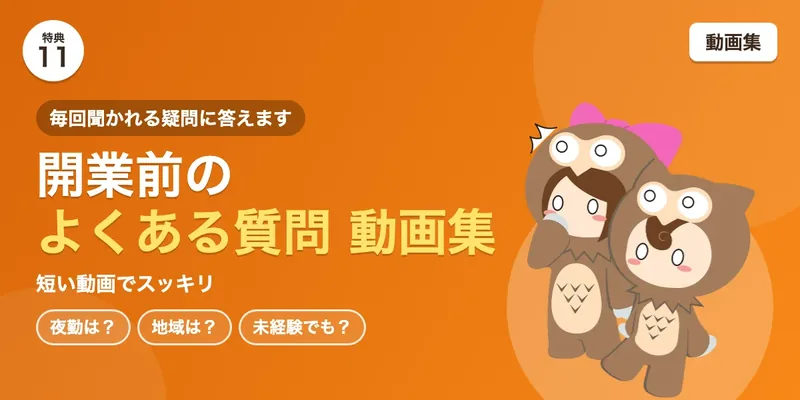
開業前のよくある質問 動画集夜勤は？地域は？未経験でも？など、毎回聞かれる疑問に答える短い動画です。
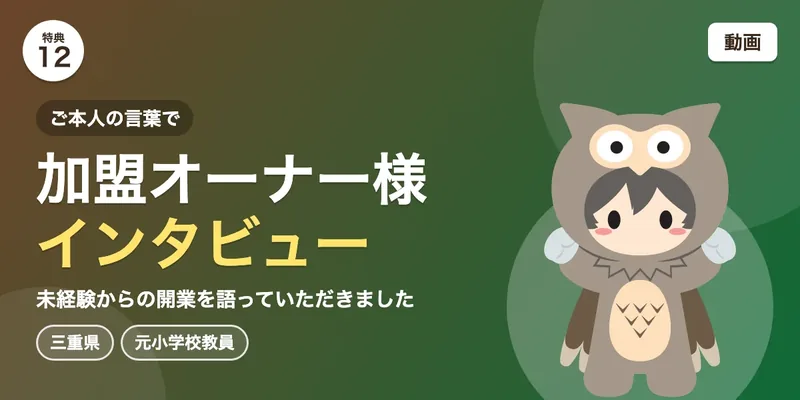
加盟オーナー様インタビュー三重県のオーナー様（元小学校教員）が、未経験からの開業をご本人の言葉で語る動画です。愛知のオーナー様は、掲載の同意が取れたら追加
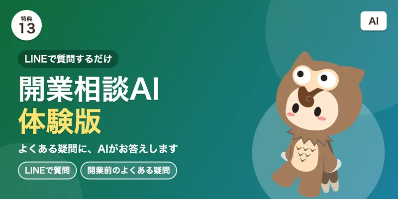
開業相談AI（体験版）LINEで質問すると、開業前のよくある疑問にAIが答えます。サブスクのAI相談との線引きを決めてから
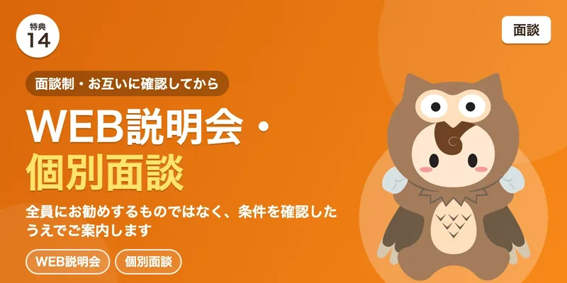
WEB説明会・個別面談面談制です。担当者と条件を確認したうえで進めます。